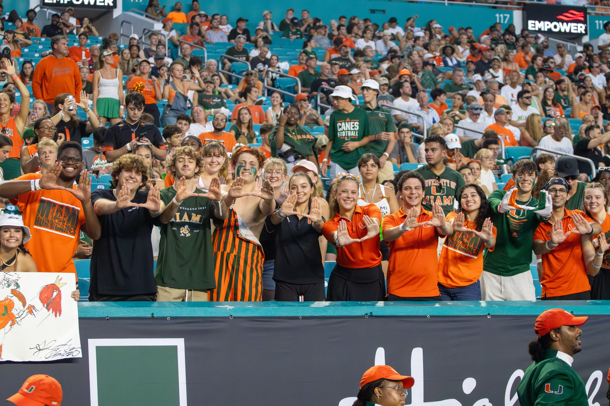
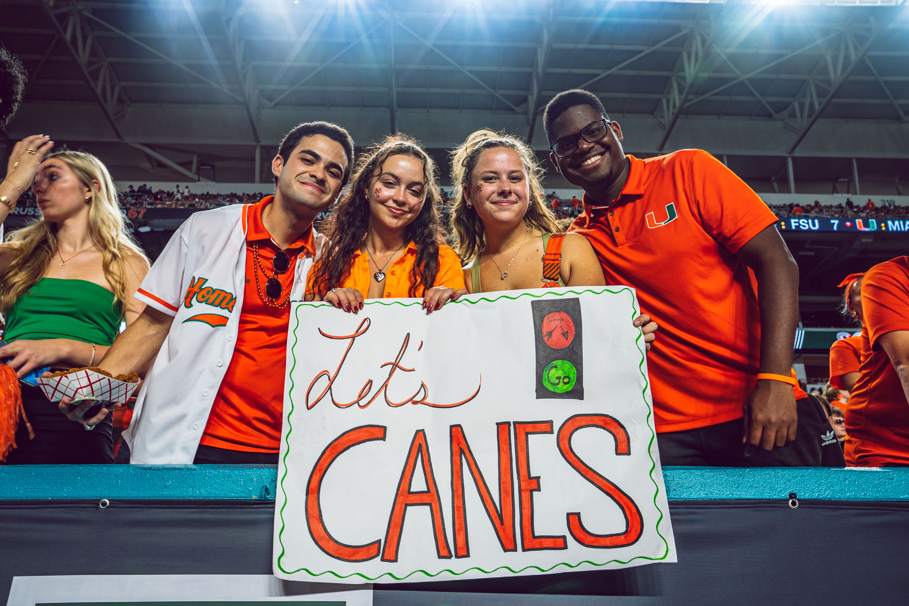
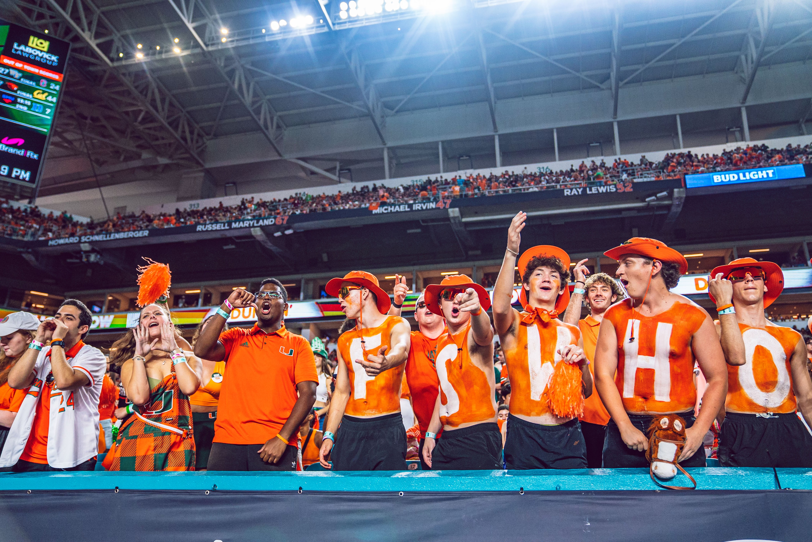

Executive Board
- Chair
- External Vice Chair
- Internal Vice Chair
- 2 Football Co-Chairs
- 2 Basketball Co-Chairs
- 2 Baseball Co-Chairs
- 2 Olympic Sports Co-Chairs
- 2 Creative Co-Chairs
Football Committee
The Football Committee is overseen by the Football Chairs on the Executive Board. This committee assists the Football
Chairs with planning, marketing, and executing all football game day operations and giveaways. Committee members create
excitement around related events, ensure events and giveaways run smoothly by stepping into different roles as needed, and work to spread the
word about Category 5 and athletic events. Football Committee members continuously think of new and creative ways to encourage more
students to attend football games and related events.
Basketball Committee
The Basketball Committee is overseen by the Basketball Chairs on the Executive Board. This committee assists the
Basketball Chairs with planning, marketing, and executing all men's and women's basketball game day operations and giveaways.
Committee members create excitement around related events, ensure events and giveaways run smoothly by stepping into different roles as needed,
and work to spread the word about Category 5 and athletic events. Basketball Committee members continuously think of new and
creative ways to encourage more students to attend basketball games and related events.
Baseball Committee
The Baseball Committee is overseen by the Baseball Chair on the Executive Board. This committee assists the Baseball
Chair with planning, marketing, and executing all baseball game day operations and giveaways. Committee members create
excitement around related events, ensure events and giveaways run smoothly by stepping into different roles as needed, and work to spread the word
about Category 5 and athletic events. Baseball Committee members continuously think of new and creative ways to encourage more
students to attend baseball games and related events.
Olympic Sports Committee
The Olympic Sports Committee is overseen by the Olympic Sports Chairs on the Executive Board. This committee assists the Olympic Sports
Chairs with planning, marketing, and executing all game day operations and giveaways for women's volleyball, women's soccer, men's and women's tennis
, swim & dive, and track & field. Committee members create excitement around related events, ensure events and giveaways run smoothly by stepping
into different roles as needed, and work to spread the word about Category 5 and athletic events. Olympic Sports Committee members continuously think of new
and creative ways to encourage more students to attend games and related events.
Creative Committee
The Creative Committee is overseen by the Creative Chairs on the Executive Board. This committee regularly creates,
captures, and posts content to Category 5's social media pages, along with other marketing opportunities around campus.
Members bring different designs for giveaways to life and photograph those designs. A major goal of this committee is to keep the student body
engaged, even when no events are scheduled.
Current Ranking of Committees Based On Points
- Olympic Sports
- Basketball
- Baseball
- Football
- Creative
Gallery
  Category 5 is all about ensuring the University is spirited and are the bearers of tradition.
- David Kuper, Co-Basketball Chair 2024-2025